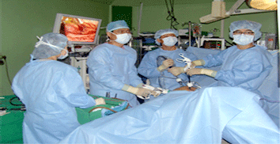

Laparoscopic surgery, also called minimally invasive surgery (MIS), or keyhole surgery, is a modern surgical technique in which operations in the abdomen are performed through small incisions (usually 0.5-1.5 cm) as opposed to the larger incisions needed in laparotomy. Laparoscopic surgery includes operations within the abdominal or pelvic cavities, whereas keyhole surgery performed on the thoracic or chest cavity is called thoracoscopic surgery. Laparoscopic and thoracoscopic surgery belong to the broader field of endoscopy. There are a number of advantages to the patient with laparoscopic surgery versus an open procedure.
Advantages
Reduced hemorrhage, which reduces the chance of needing a blood transfusion.
Smaller incision, which reduces pain and shortens recovery time, as well as resulting in less post-operative scarring and favorable cosmesis.
Less pain, leading to less pain medication needed.
Hospital stay is less, and often with a same day discharge which leads to a faster return to everyday living.
Reduced exposure of internal organs to possible external contaminants thereby reduced risk of acquiring infections and postoperative ileus.
Laparoscopic Procedures Performed in our clinic
Laparoscopic cholecystectomy
Laparoscopic cholecystectomy is the surgical removal of the gallbladder laparoscopically. It is the most common method for treating symptomatic gallstones. A traditional open cholecystectomy is a major abdominal surgery in which the surgeon removes the gallbladder through a 5- to 7-inch incision. Patients usually remain in the hospital at least 2 to 3 days and may require several additional weeks to recover at home. The advantages of performing the procedure laparoscopically include; Rather than a five to seven inch incision, the operation requires only four small openings in the abdomen. Patients usually have minimal post-operative pain. Patients usually experience faster recovery than open gallbladder surgery patients. Most patients go home within one day and enjoy a quicker return to normal activities.
Laparoscopic colorectal surgery
Laparoscopic colorectal surgery has gained wide acceptance as a treatment in a variety of benign and malignant diseases. The reproducibility and safety of all the principal colorectal procedures has been demonstrated. Surgeons performing colorectal surgery, using the laparo-assisted technique consider it more difficult than open surgery. However, it is possible to perform completely laparoscopic colectomy, rectal surgery, and total proctocolectomy in our advanced laparoscopic centers with many benefits: less postoperative pain, short-term postoperative ileus, earlier return to daily activity.
Minimally access thyroid surgery
Minimally access thyroid surgery is a technique that permits thyroid excision through a small incision at the neck. It is less invasive technique than conventional thyroid surgery. Traditional thyroid surgery usually involves a fairly long incision at the base of the neck. A permanent visible scar is possible. More recently, the video-assisted endoscopic surgery of the thyroid and neck has come into use. Obviously, the smaller incisions are less invasive, less painful and result in smaller finer scars. This operation is safe, achieves esthetically pleasing scars and requires shorter recovery periods.
Laparoscopic hernia repair
Laparoscopic hernia repair is similar to other laparoscopic procedures. General anesthesia is given, and a small cut (incision) is made in or just below the navel. The abdomen is inflated with air so that the surgeon can see the abdominal organs. A thin, lighted scope called a laparoscope is inserted through the incision. The instruments to repair the hernia are inserted through other small incisions in the lower abdomen. Mesh is then placed over the defect to reinforce the abdominal wall. Most people who have laparoscopic hernia repair surgery are able to go home the same day. Recovery time is about 1 to 2 weeks. You most likely can return to light activity after 1 to 2 weeks. Strenuous exercise should wait until after 4 weeks of recovery.
Laparoscopic Adjustable Gastric Banding (LAGB)
Laparoscopic Adjustable Gastric Banding (LAGB), like the gastric bypass surgery, involves restricting the stomach size. However, the process of restriction differs and is both adjustable and reversible. The procedure is done laparoscopically through small incisions in the abdomen. A silicone band is placed around the upper part of the stomach which creates a small pouch. The stomach holds less food and induces feeling of satiety. The procedure is usually done on an outpatient basis and takes about one hour. Many patients are able to return to work in one to two weeks. The band is adjustable. The silicone band around the stomach is hollow, and the band can be made tighter or looser by adding or removing saline. Adjustments are made to meet individual weight loss needs. The band is usually adjusted every four to six weeks during the first year after surgery. This limits the amount of food you can eat. You feel fuller faster and you lose weight because you eat less. The band is adjustable and customized to each patient and can be removed if necessary. It is the least invasive option and it involves no stomach stapling, cutting or intestinal rerouting. The band has the lowest complication rate and has a very low risk of malnutrition.
Laparoscopic Vertical Sleeve Gastrectomy (VSG)
Laparoscopic Vertical Sleeve Gastrectomy (VSG) is a relatively new procedure. We have experienced great success with this procedure. Our patients have lost the weight they expected while staying healthy. The sleeve gastrectomy is performed laparoscopically through small incisions. Sophisticated instruments and a small camera are inserted through these incisions to conduct the operation. The use of small incisions creates less tissue damage, fewer complications, and an earlier discharge from the hospital. In this procedure, most of the stomach is removed and a ‘vertical sleeve’ or tube is fashioned from the remaining stomach. The food goes through the stomach into the small intestine in a normal fashion. Because the stomach is so much smaller, it takes less food to fill you up, and you eat less. The food does not bypass any of the intestines so there is no malabsorption created by the sleeve gastrectomy. The production of the “appetite hormone” ghrelin is reduced since it is made by the stomach. The reduction of this hormone reduces hunger and contributes to the success of the procedure. The procedure is a satiety-inducing procedure because it reduces the “appetite hormone” ghrelin, and there is no bypassing of the small intestine therefore the risk of malnutrition is low. Weight loss after the sleeve gastrectomy is similar to the weight loss after the gastric bypass.